In order to use Fuse, you must create an account, link Fuse to Carvoyant, and add vehicles. You can do all that on Joinfuse.com. The following help will walk you through the following:
- Creating an account
- Linking (authorizing) Joinfuse to your Kynetx account
- Creating a Carvoyant account and linking it to your Fuse system
- Adding vehicle to Fuse
Creating an Account
The first step is to create an account. When you first go to Joinfuse.com, you'll see the following screen:
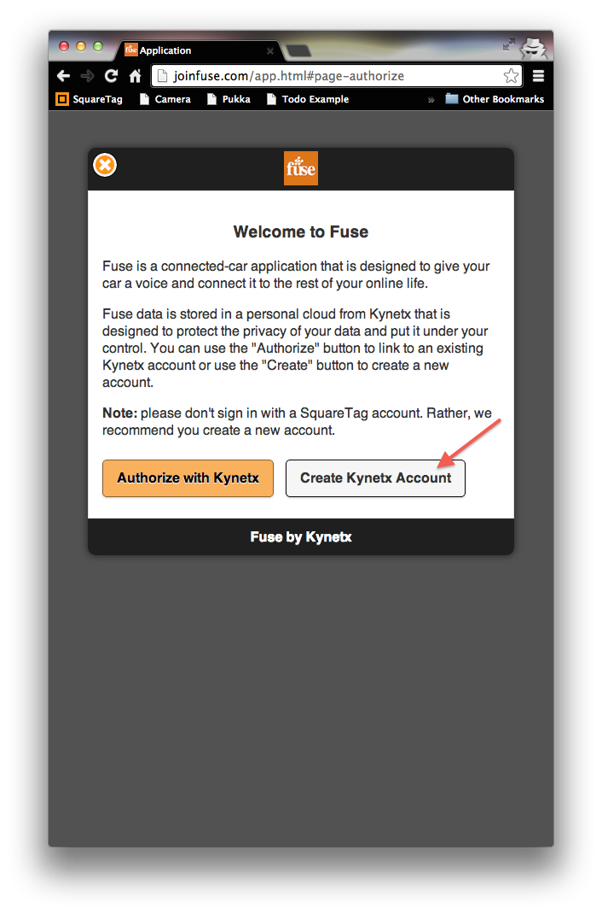If you already have a Kynetx account, you can simply click the "Authorize with Kynetx" button on the left. But the first time, you'll need to click the "Create Kynetx Account" button and create one.
Please do not use your SquareTag account, if you have one, for Fuse. Rather, create a new Kynetx account for Fuse.
The account creation screen allows you to pick a user name, password and enter your name.
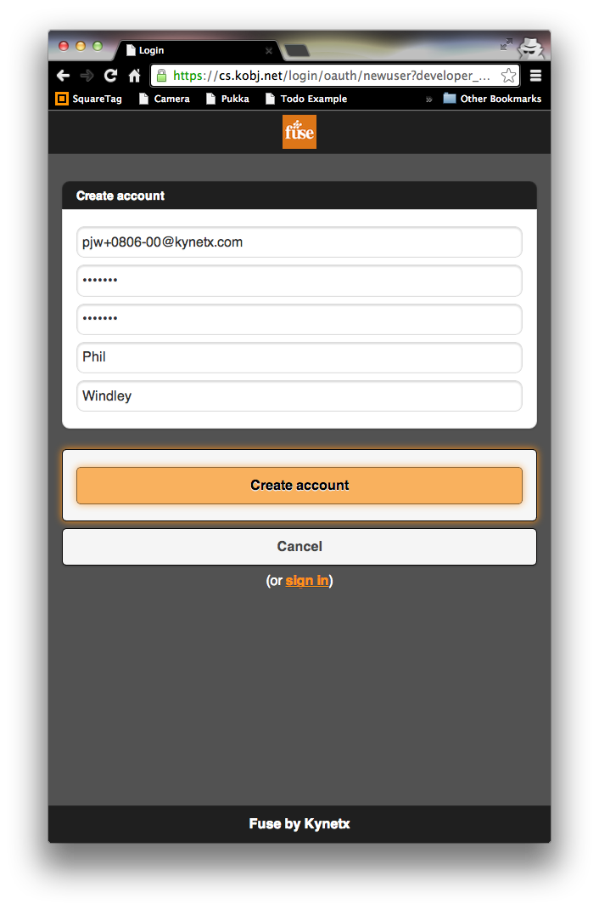Linking Joinfuse to Your Kynetx Account
Each Fuse user has an independent cloud, an online representation of the owner and the fleet. The first time you link Fuse to your Kynetx account, the system will automatically create your Fuse cloud and make it ready to use.
Once you create your account, you'll be asked if you want to allow Fuse to access your personal cloud. Click "Allow." This allows Fuse to install all of the software you'll need for Fuse to work.
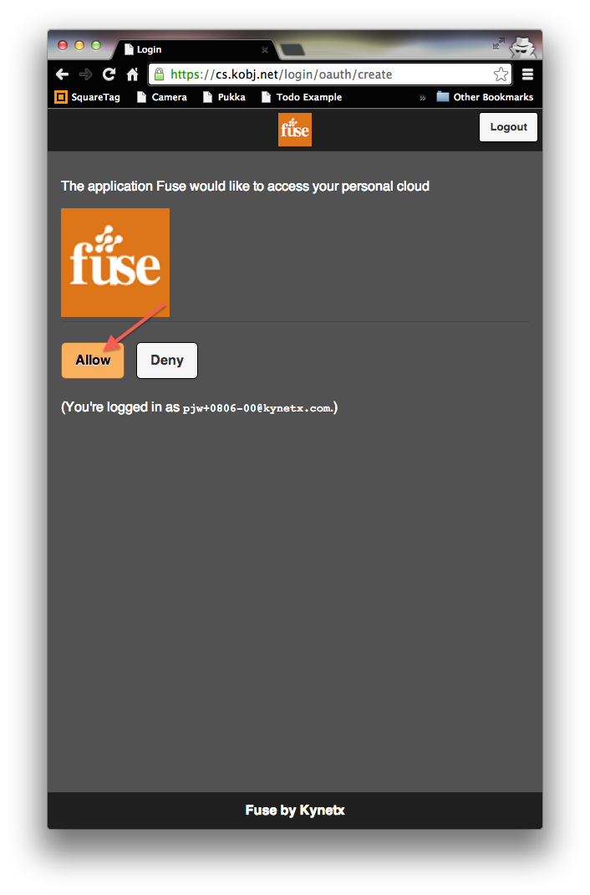Once you link Fuse to your Kynetx account, you will see the Fuse management console:
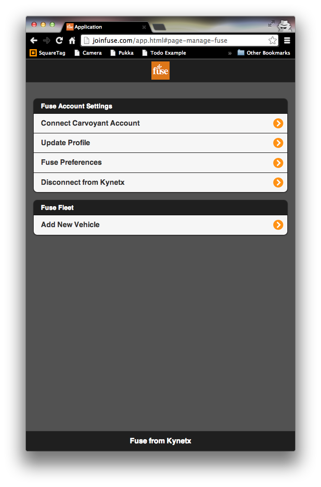Creating and Linking a Carvoyant Account
You Fuse device comes ready to use, just plug it in. Fuse uses Carvoyant to manage the Fuse devices and their connectivity. To use Fuse, you have to give Fuse permission to access the device and it's date by linking Carvoyant to your Fuse cloud.
If your Fuse cloud is not linked to Carvoyant, you will see a menu item that says "Connect Carvoyant Account." Clicking that will take you to the Carvoyant login screen.
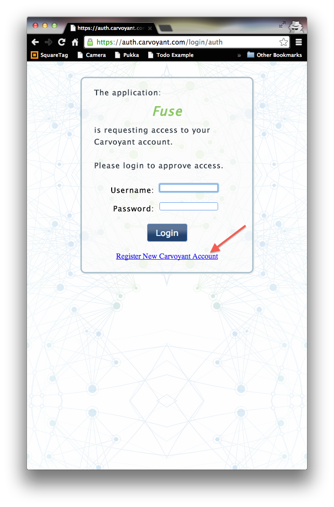If you already have a Carvoyant account, there's no need to create a new one. Simply log in. Most people, however, will need to click on the "Register New Carvoyant Account" link at the bottom of the page and create one.
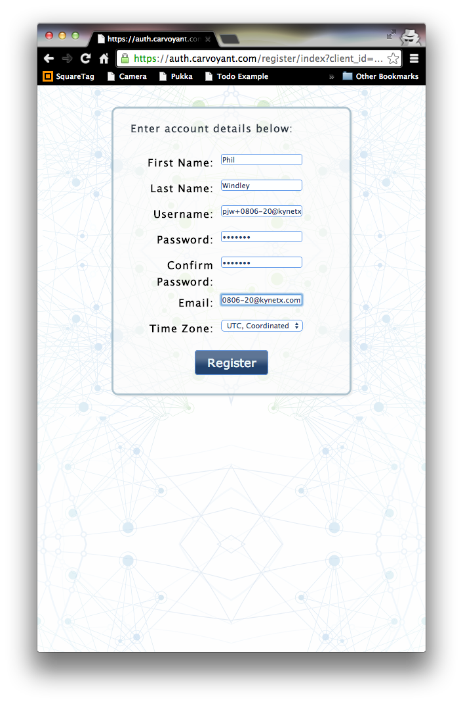We recommend you use the same username for your Carvoyant account that you used when you created your Kynetx account above, but that's not required.
Once you've filled out the registration form, you will be returned to Carvoyant login screen. Use the username and password you just created on the Carvoyant registration page to login in.
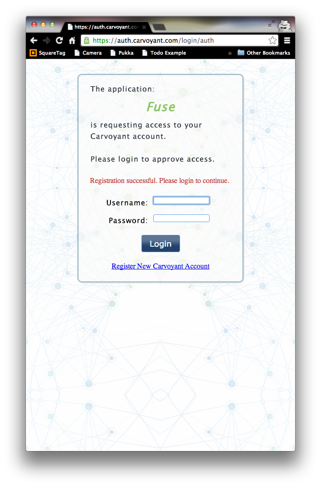After you've linked Carvoyant, you'll notice that the menu item that used to say "Connect Carvoyant Account" now simply says "Carvoyant is Linked."
Adding Vehicles
The menu item at the bottom of the page allows you to add vehicles to the Fuse system.
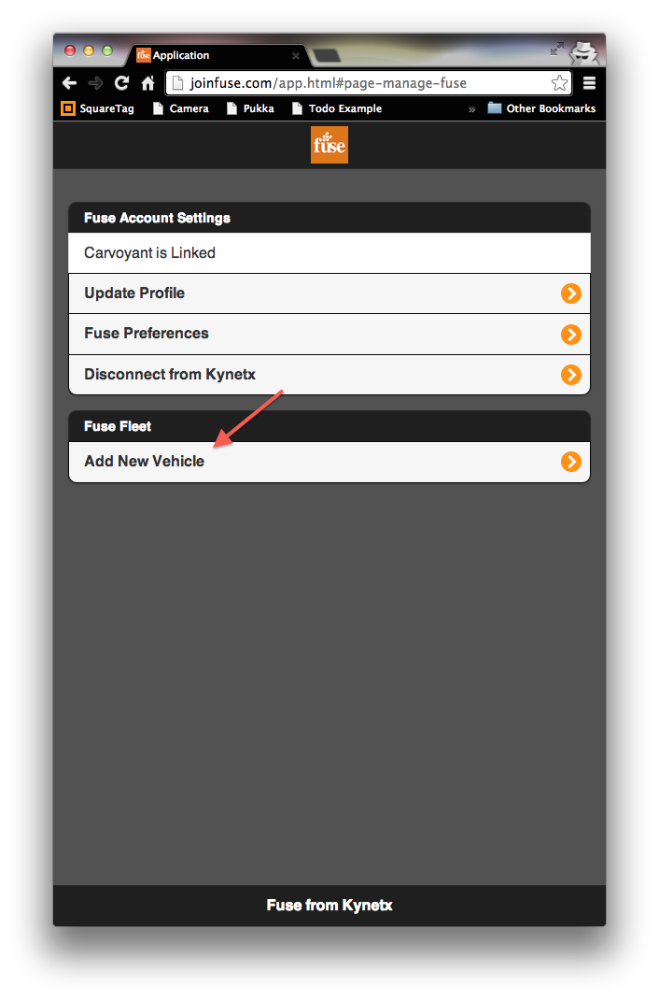To add a vehicle to Fuse, you will need:
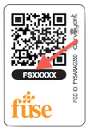- The vehicle identification number or VIN. Every car has a VIN (generally a 17 digit number). The VIN is located on the driver's side dashboard (visible through the windshield) and on the driver's side door jamb. The VIN will also be on your registration and insurance paperwork.
- The Fuse device ID. This is the string of characters and numbers that starts with "FS" on your Fuse device.
- Your current odometer reading.
- A picture to use as the logo for your vehicle (optional). This picture works better if it's square.
You can plug the Fuse device into the vehicle at any time. As soon as you've added the vehicle to the system, Fuse will begin tracking your trips. The device plugs into the OBD II port which will be located somewhere on the driver's side of your vehicle (Need help finding your OBD II port?)
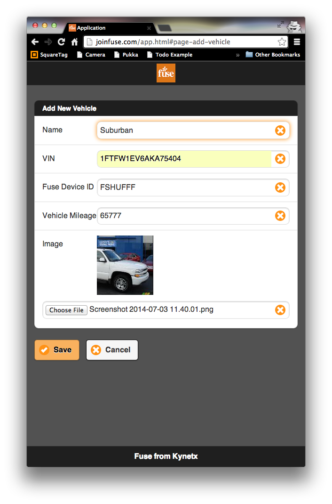Once you add a vehicle to Fuse, you'll note that it shows up on the main page under Vehicles. Clicking it allows you to edit your vehicle.
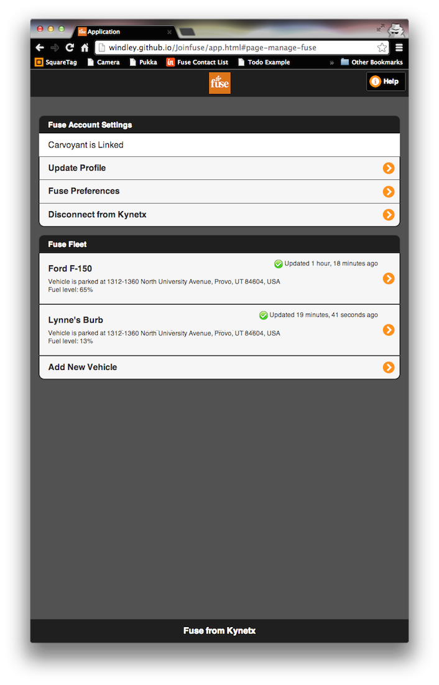Profile and Preferences
You can also update your personal profile and preferences on the Fuse management console.